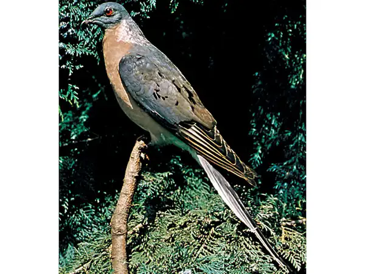
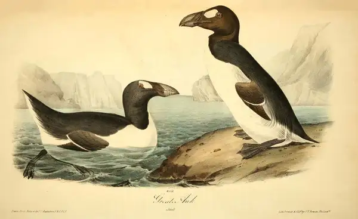

Passenger Pigeon
Once famed for its massive migratory flocks that would darken the sky for days, the passenger pigeon was hunted to extinction in the early 1900s. Billions of these gregarious birds once inhabited eastern North America and were similar in appearance to the mourning dove. As American settlers pressed westward, passenger pigeons were slaughtered by the million yearly for their meat and shipped by railway carloads for sale in city markets.
Great Auk
The great auk was a flightless seabird that bred in colonies on rocky islands in the North Atlantic, namely St. Kilda, the Faroe Islands, Iceland, and Funk Island off Newfoundland. The birds were approximately 75 cm (30 inches) long and had short wings which were used for underwater swimming.
